Version control systems have been used by developers working in teams to collaborate on software development. Even a 1 person development team needs a single repository that keeps track of source code changes and be able to know what changes were made when and if needed rollback changes to a particular version. In the case of a large development team, the version control system is critical to allow different people to work independently on different parts of the same source and don't override each other's changes.
Git is the most popular version control system used by developers today. Whether it is writing code as an individual or as a team, being skilled in Git is fundamental for anyone who wants to code as a career. Watch the following video for a great introduction to version control and Git.
Git is an open source project that defines how version control is handled in a distributed manner and provides the command line interface and API for Git Client (i.e. developer machine) to interface with Git Server that hosts the remote repositories. The most popular Git Server is implemented by GitHub and other popular ones include GitLab and BitBucket.
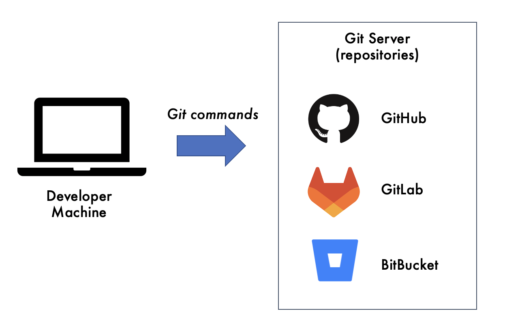
Let's get you started with Git on your developer machine.
[1] Download Xcode. The installation will take a while.
[2] We need a package manager. Install Homebew with the following command:
% /bin/bash -c "$(curl -fsSL https://raw.githubusercontent.com/Homebrew/install/HEAD/install.sh)"
[3] Add Homebrew to PATH to save some typing.
[3a] Look for profile file for the default mac's .zsh shell in your home directory:
% cd % ls -ad .z* .zprofile .zsh_history .zsh_sessions
[3b] edit .zprofile file to add /opt/homebrew/bin path. I'm a vi guy:
% vi .zprofile
# Setting PATH for Python 3.10
# The original version is saved in .zprofile.pysave
PATH="/Library/Frameworks/Python.framework/Versions/3.10/bin:/opt/homebrew/bin:${PATH}"
export PATH
[4] Install Git with Homebrew:
% brew install git
[5] Confirm that installation is successful by checking for the git version:
% git --version git version 2.32.0 (Apple Git-132)
Now that you have the basics setup, it is time to create your first Git repository. Go to GitHub.
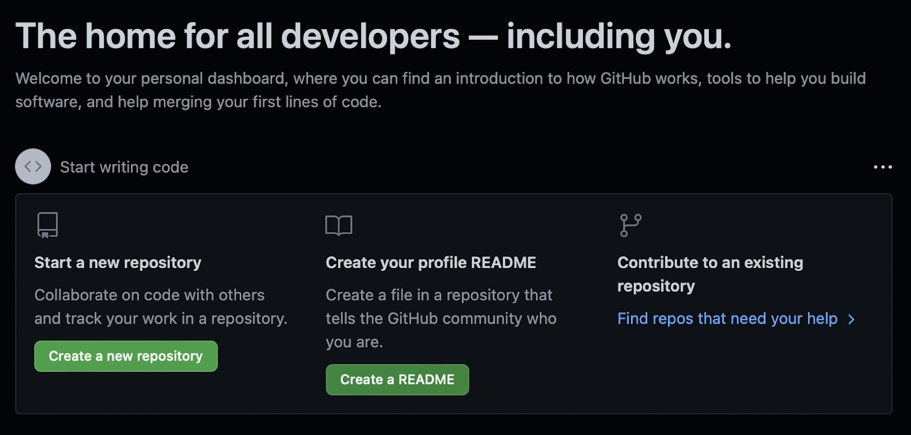
myfirstrepo and set the repository as Private and check the Add a Readme file option. Click the Create repository button.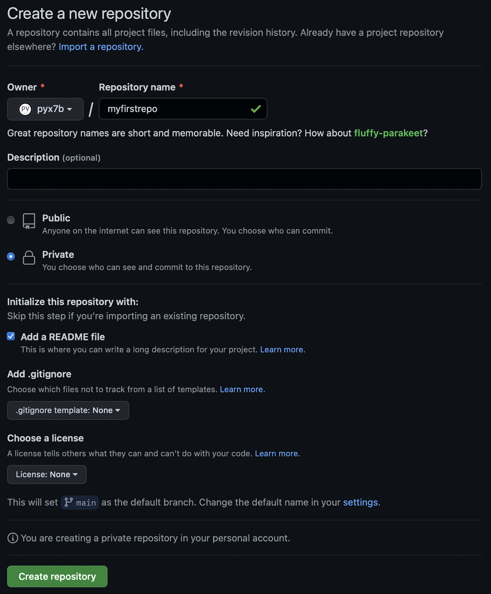
pyx7b/myfirstrepo. 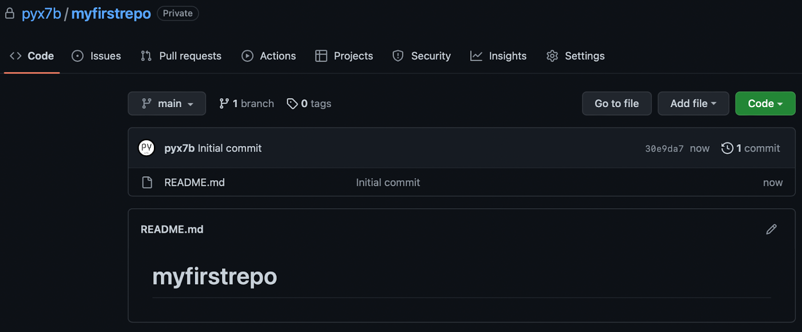
Source code repositories are often the crown jewel that attackers want to gain access to compromise the software from source. It is therefore important for developers to have good security practices starting with securing their logins. Perform the following 2 essential steps to secure your Git Account.
The first step is to turn on 2FA,
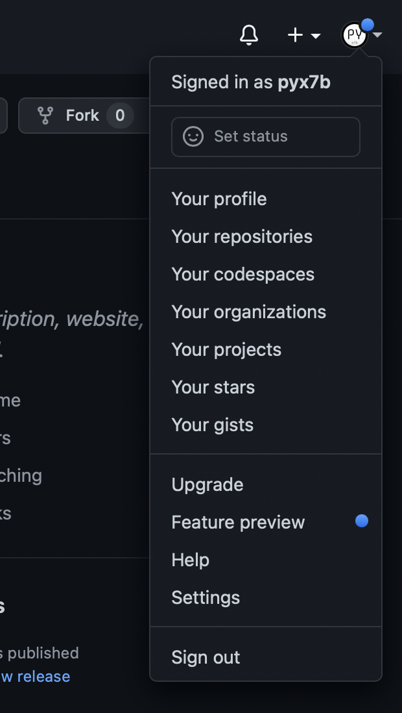
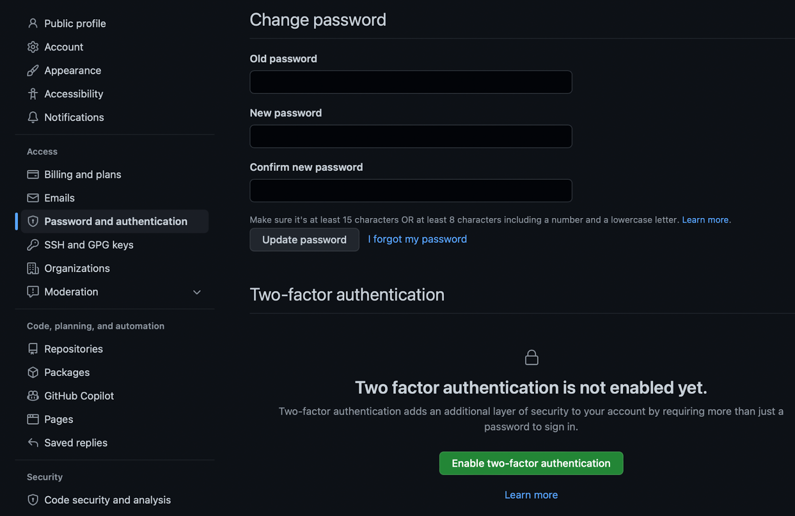
Personal access tokens can be used instead of a password for Git over HTTPS, or can be used to authenticate to the API over Basic Authentication. In this way, it reduces the need to use your password.
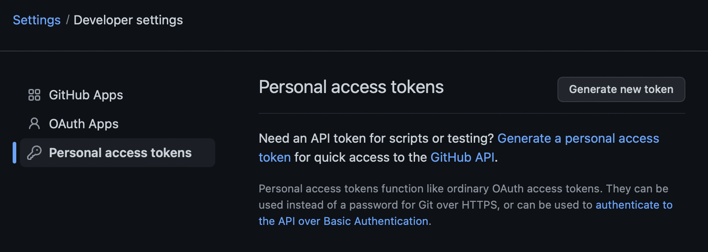
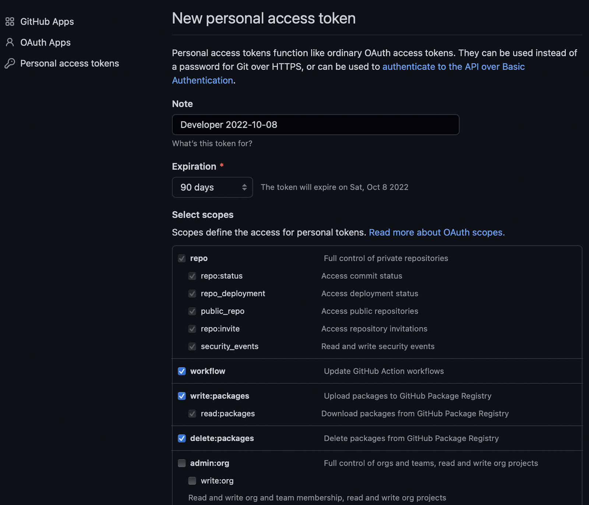
generated token and save it securely e.g. with a Password Manager. We will be using the token in the next chapter.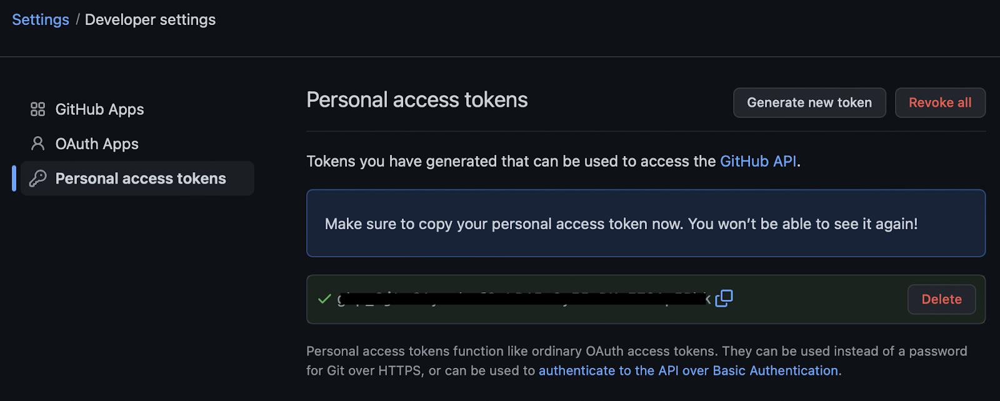
To work with the repository from your desktop, first you need to clone or copy the repository from GitHub to your development machine.
myfirstrepo repository. Given its the first time we are logging into Git from our developer machine, supply your username as a prefix @. % git clone https://pyx7b@github.com/pyx7b/myfirstrepo.git Cloning into 'myfirstrepo'... Password for 'https://pyx7b@github.com':
ls -a on the directory.% cd myfirstrepo % ls -a . .. .git README.md
README.md file that was created when we create the repository and also a hidden .git directory.We will execute a few commands to make changes to the local repository and push changes to GitHub. We will elaborate the details of the commands in latter units.
README.md file to the following:# Introduction This is my first repository.
git status command. It shows that README.md is modified but changes are not staged. Basically, it meant we have edit the fir% git status
On branch main
Your branch is up to date with 'origin/main'.
Changes not staged for commit:
(use "git add <file>..." to update what will be committed)
(use "git restore <file>..." to discard changes in working directory)
modified: README.md
git add . followed by git status. The README.md file is now staged.% git add .
% git status
On branch main
Your branch is up to date with 'origin/main'.
Changes to be committed:
(use "git restore --staged <file>..." to unstage)
modified: README.md
git commit to commit the changes and label it as "my first commit": % git add . % git commit -m "my first commit" [main 557c787] my first commit 1 file changed, 3 insertions(+), 1 deletion(-)
push the change to the main branch on the remote repository - called origin:% git push origin main Enumerating objects: 5, done. Counting objects: 100% (5/5), done. Writing objects: 100% (3/3), 265 bytes | 265.00 KiB/s, done. Total 3 (delta 0), reused 0 (delta 0), pack-reused 0 To https://github.com/pyx7b/myfirstrepo.git 30e9da7..557c787 main -> main
Login to your GitHub repository to observe the changes.
README.md file has been modified.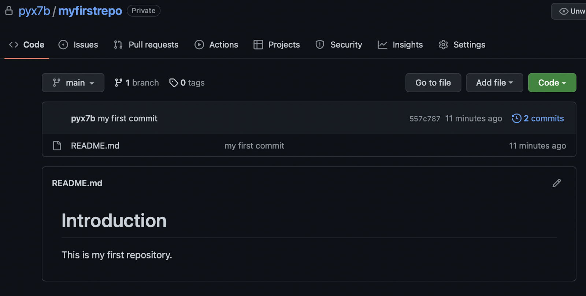
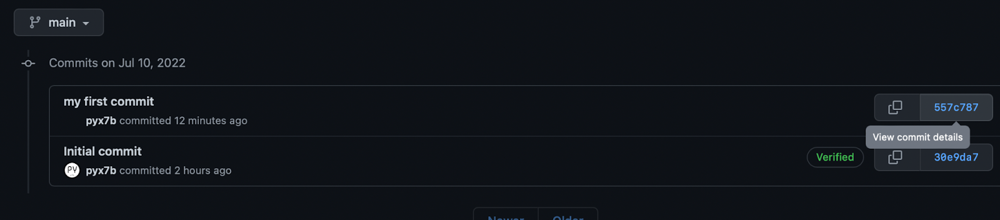
README.md in that commit: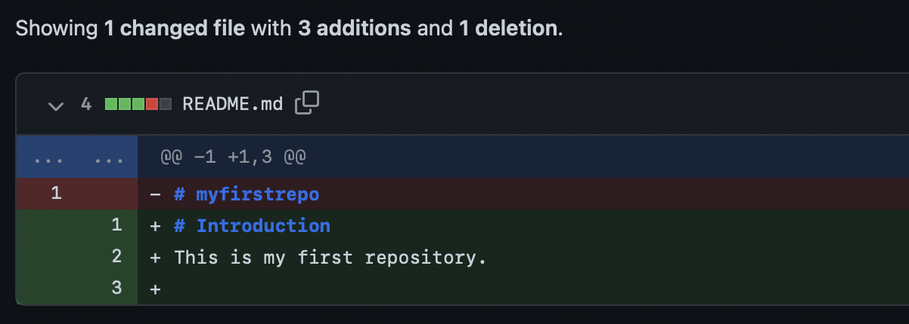
Congratulations you have completed the first unit of getting started with Git!
This unit is meant to cover the essentials for you to understand how Git works. If you want to dive deeper, refer to the following resources.